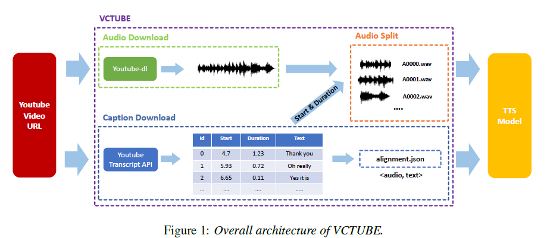

VCTUBE is open-source Python library, that can automatically generate
VCTUBE is open-source Python library, that can automatically generate
Recent studies have shown that Text-to-Speech (TTS) systems based on deep neural networks (e.g., Tacotron, Deep Voice, etc.) can generate human-like speech with high quality.
However, it has been reported that training such a deep learning model to generate human-like speech requires a large amount of speech data.
At least 10 hours of
For this reason, VCTUBE can solve this problem. There are many video in Youtube. And Many of these videos have subtitles.

An architecture of VCTUBE's overall processss.